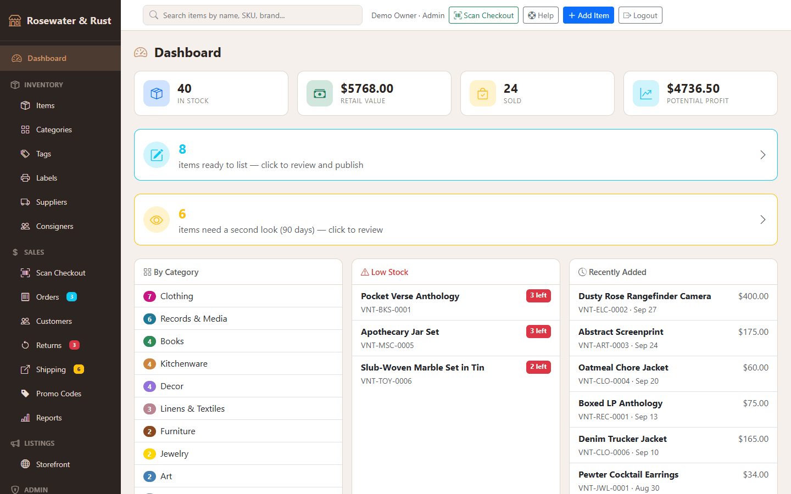
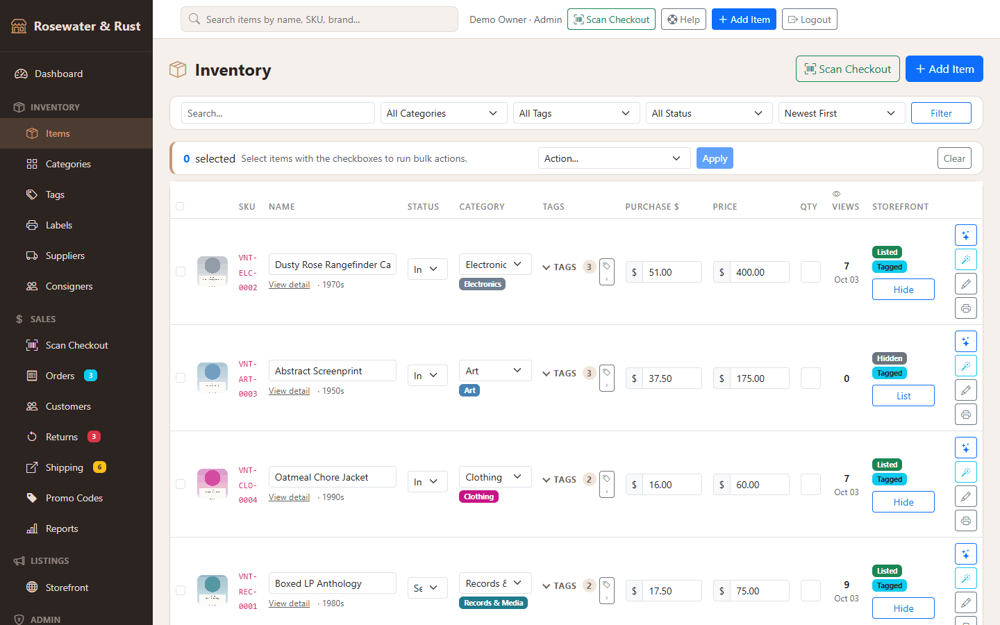
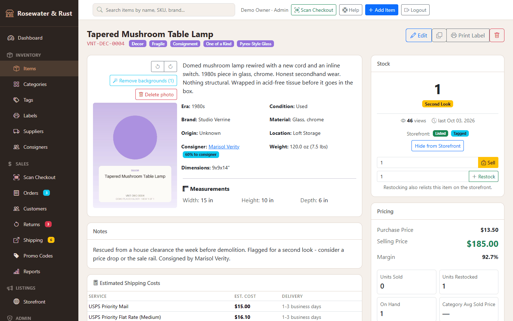
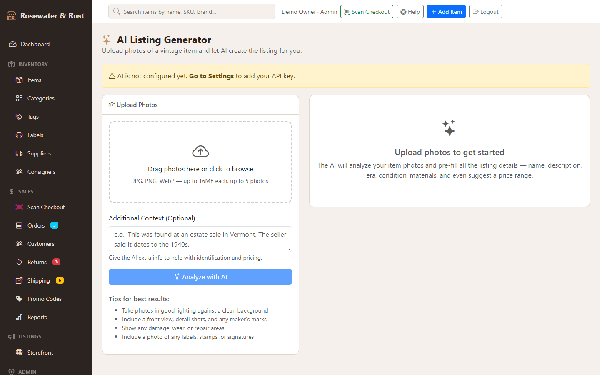
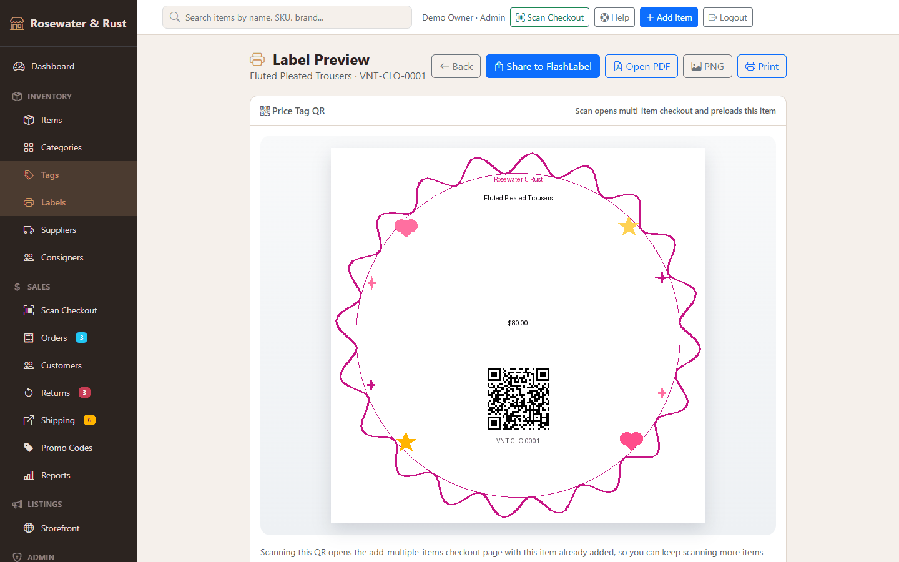
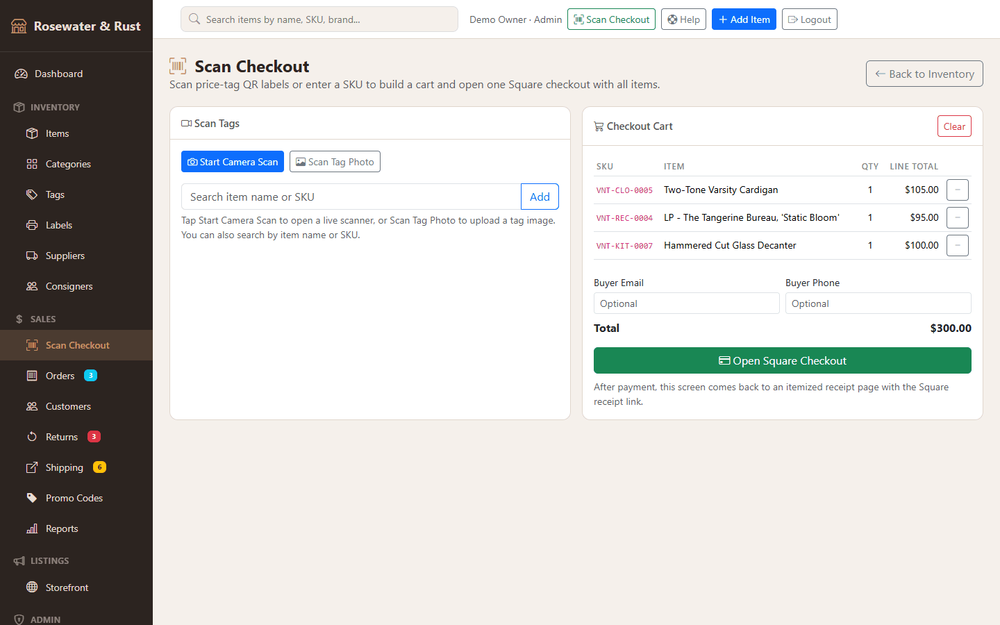
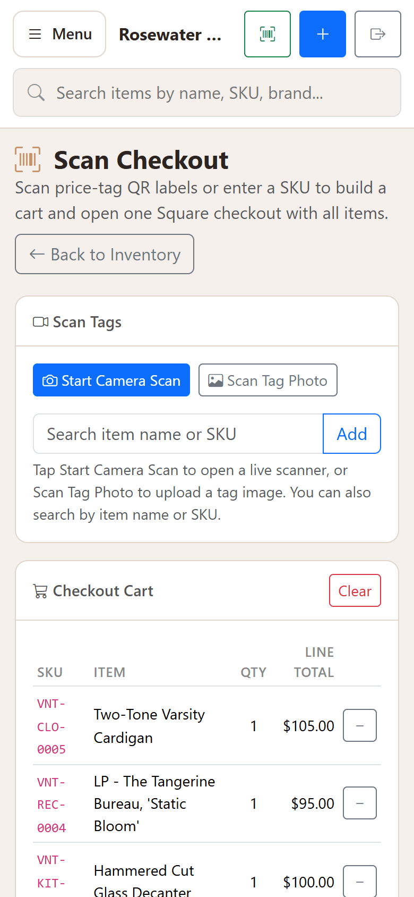
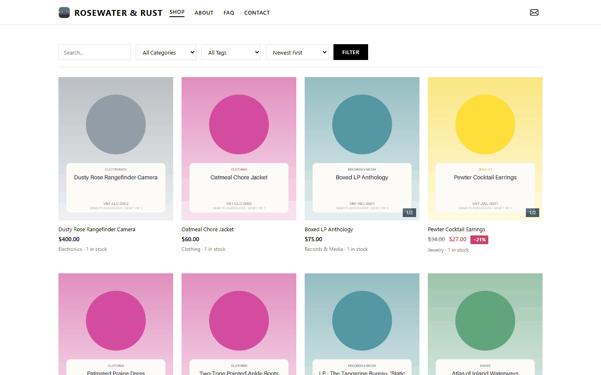
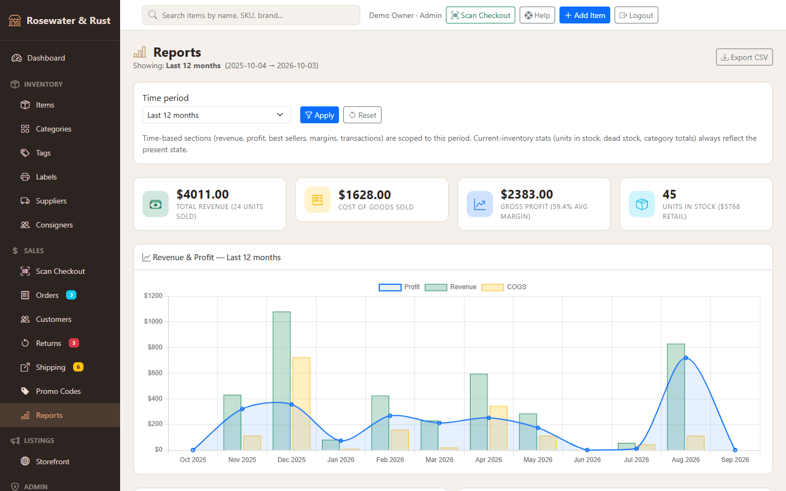
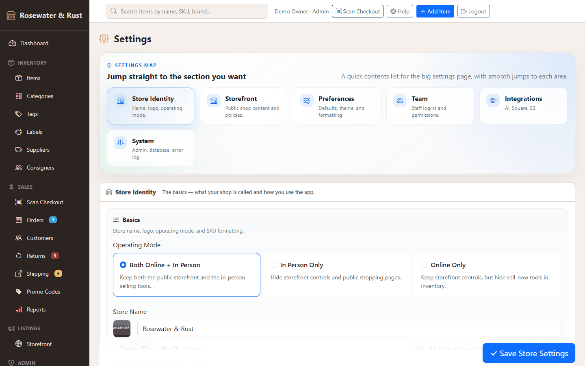

A self-hosted Flask app for vintage, thrift and antique resale. Photograph a piece, draft the listing with your own AI key, print a QR price tag, sell it at the counter or on your own storefront, ship it, and see the margin.
Try it
Click through the real app
520 pages saved from the running program while it held the included demo seed: dashboard, inventory, every item, its edit form and price tag, orders, customers, shipping, returns, reports, settings, the help centre and the public storefront. It is read-only — see below for what that means.
Everything here is demo data. The shop “Rosewater & Rust” is fictional: 80 items in 12 categories, 25 orders, 15 shipments, 6 return requests and 5 consigners, all written by the seed_demo.py script that ships with the code. The item photos are generated placeholder cards, not product photography. The screenshots and the snapshot are captures of the real application running that data — nothing is mocked up or retouched.
What it looks like

The dashboard. Stock and retail value at a glance, the queue of items ready to list, and the “Second Look” items that have sat unsold past the number of days you set.

The inventory grid. One row per one-of-a-kind piece, with inline quick-edit of status, category, tags, cost and price, bulk actions, and per-item storefront visibility.

An item. Era, condition, brand, material, measurements, location, the consigner and their split, margin, view count and USPS cost estimates (from a built-in rate table, not a live rate API).

The AI listing generator. Drop in photos and it drafts the name, description, era, condition, materials, tags and a price range for you to review. It uses your own Anthropic or OpenAI key; the demo has none, which is why the page says so.

A QR price tag. Rendered as a print-ready PNG and PDF, styled differently for clothing and hard goods. Scanning the code opens the counter checkout with that item already in the cart.

The counter. Scan tags with the phone camera (QR codes and 1D barcodes) or type a SKU, build a cart, then open one Square payment link for all of it. Square is your own account.

The same page on a phone, which is where it is meant to be used.

Your own storefront. A public shop with filters, item pages, a cart, promo codes and Square checkout, plus editable About, FAQ, Contact and policy pages. Themes are switchable with a live preview.

Reports over preset or custom date ranges: revenue, cost of goods, profit, margin, units sold, best sellers and inventory valuation.

Settings. Three operating modes — hybrid, in-person only, online only — hide the features you do not use. Integrations for AI, Square and S3-compatible photo storage take your own keys.
What the live demo can and cannot do
Works
Every page in the admin and the storefront, and every link between them
Filtering by one status (inventory, orders, returns, shipping), by one category on the storefront, and the report periods
The counter: type an exact SKU from a price tag, such as VNT-REC-0004, and it goes in the cart
AI drafting, price checks and background removal (they need your API key)
Square payment links and checkout
Free-text search, filter combinations, exports and the PDF tags
Each of these shows a short notice instead. Nothing on this site sends data anywhere.
What it does
Inventory for one-of-a-kind stock: SKU generation per category, categories, tag groups, suppliers, consigners with split tracking and payout reports, a stock ledger, bulk actions and “Second Look” flagging.
Photos: multi-photo upload with compression; AI background removal (OpenAI or Replicate, your key); local disk or any S3-compatible bucket.
AI with your own Anthropic or OpenAI key: the listing generator and an AI Price Check against your own sold items.
Labels: QR price tags, shelf labels, batch label sheets and printable shipping label sheets.
Point of sale: camera scanning, cart, promo codes, Square payment links, a receipt page, and a Cashier role that cannot see reports or settings.
Storefront, orders and fulfilment: public shop, orders and customers, a shipping queue with tracking, returns with a status workflow, promo codes.
Operations: date-range reports, activity and error logs, users and roles, CSV import and export, a migration wizard and a built-in help centre.
A bonus studio site module for a second business on the same premises, with fictional placeholder content. Removable in one line.
What it does not do
No marketplace integrations. It does not list to, sync with, or pull prices from eBay, Etsy or any other selling site. Your online channel is the built-in storefront. For books there is a plain “View on AbeBooks” search link that opens in your own browser.
No API keys or accounts are included. AI needs your own Anthropic or OpenAI key, payments need your own Square account, cloud photos need your own S3 bucket. Usage is billed to you by those providers.
No hosting, and not a one-click install. You need a Python virtualenv and environment variables. SQLite works locally; PostgreSQL is recommended for a hosted deploy.
USPS shipping estimates come from a hard-coded rate table, not a live rate API.
No database migration framework, and the tests are one end-to-end script rather than a unit-test suite.
No login rate limiting or two-factor auth on the admin. Read the deployment guide's security checklist before putting it on the internet.
Support is by email, best effort, with no guaranteed response time.
What I ran before shipping it
The end-to-end test script seeds a throwaway shop and drives the storefront and the main admin screens: all 80 checks pass, run again from the packaged zip in a clean virtualenv.
A wheel-only install (no compiler) on Python 3.12, and a sweep of every GET route with zero server errors, recorded in the shipped HEALTHCHECK.md.
All 520 pages of the snapshot were opened in a headless browser with zero script errors. Doing that found two front-end bugs in the app — a cart script loaded twice and a tooltip script that ran before Bootstrap had loaded — and a broken link in the studio module. All three are fixed in the version for sale.
Get it
Vintage Shop — $99
Complete Flask source: about 17,000 lines of Python and 84 templates, with a commercial licence for your own business. Python 3.12 or newer.